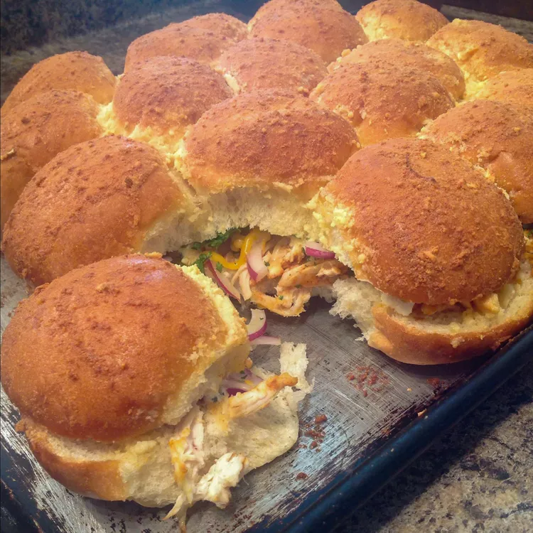

Chicken Sliders

Description
Delicious pull-apart chicken breast sliders, perfect for a party. Quick and easy!
Ingredients
- 12 dinner rolls, halved lengthwise
- 3 cups chopped cooked chicken
- ¾ cup shredded Cheddar cheese, or to taste
- ⅓ cup barbeque sauce
- ½ red onion, thinly sliced
- ½ cup finely chopped parsley
- 2 tablespoons melted butter
- ¼ cup grated Parmesan cheese
- 1 tablespoon finely chopped garlic
Steps
- Preheat the oven to 350 degrees F (175 degrees C).
- Place roll bottoms on a baking sheet. Divide chicken, Cheddar cheese, barbeque sauce, onion, and parsley equally over rolls.
- Cover with roll tops; brush with melted butter. Sprinkle Parmesan cheese and garlic on top.
- Bake in the preheated oven until golden brown and cheese is melted, about 20 minutes. Slice and serve.
Credits: allrecipes.com